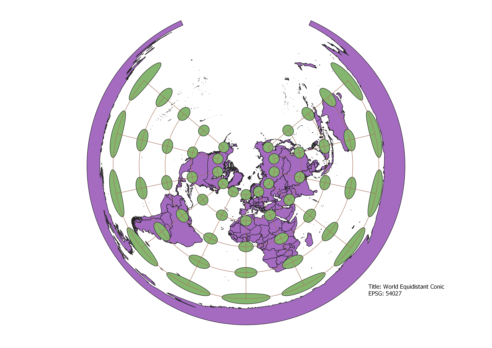
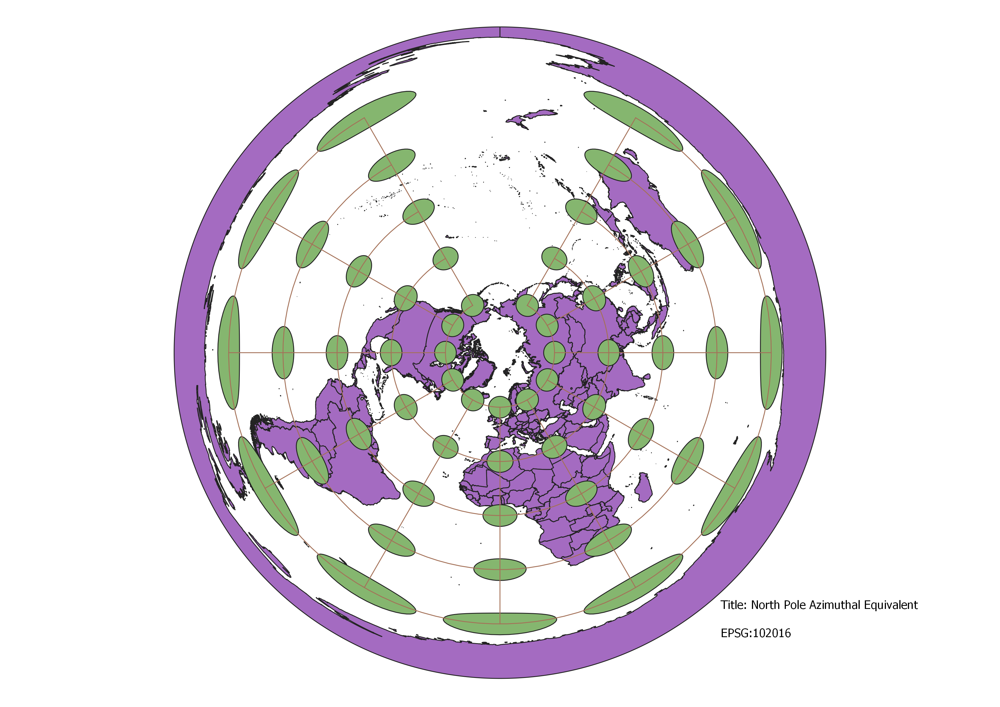
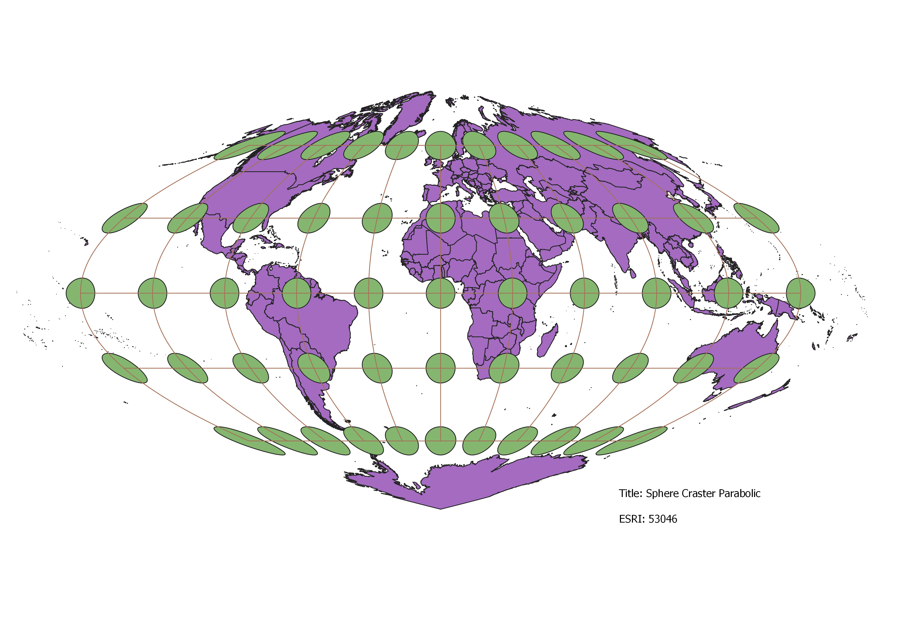
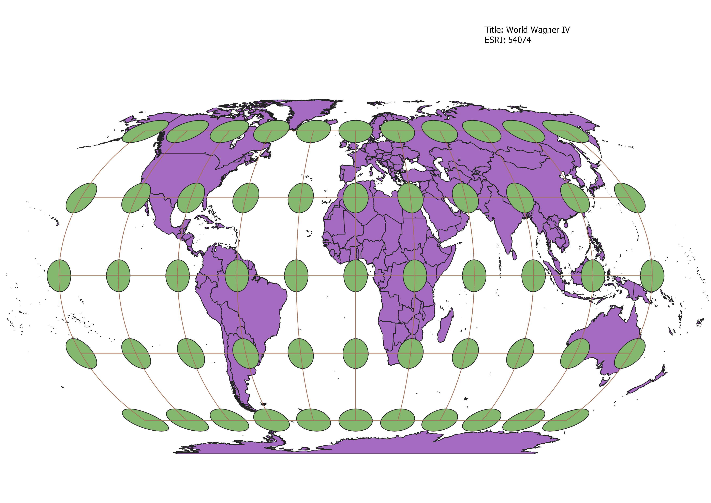

The way I was able to display the map in different projections using QGIS was through the Coordinate Reference System(CRS) which displays the map through different reference systems.
Near the equator, the distortion seems to be minimal and then it exponentially increases as you get near the edges.
The distortion like the WGS84 projection has minimal distortion near the equator and then has a sinusoidal bulge out from the prime meridian. The distortion near the poles allows for an interesting view of the modified azimuthal view.

The Pseudo-mercator seems to be what I think of when I look at a world map on paper. Many of the countries also seem distrorted in size.
It seems to distort all of the sizes of coutries especially at the meridians. When referring to the internet, ArcGIS recommends that it not be used for actual navigation and only for general world maps.
The map looks to maintain shape around the equator, but distorts it heavily towards the poles.
There is little distortion thorughout the main image and more around the far edges. Distances look to be preserved.
It shows the distance from the poles accurately and seems to feature more distortion the further one gets from the pole.
This map would most likely not be advisable to use. It produces a significant distortion towards the edges and at high latitudes.
It seems to be similar to the cylindrical equal area map, however it has less distortion toawrds the edges.
